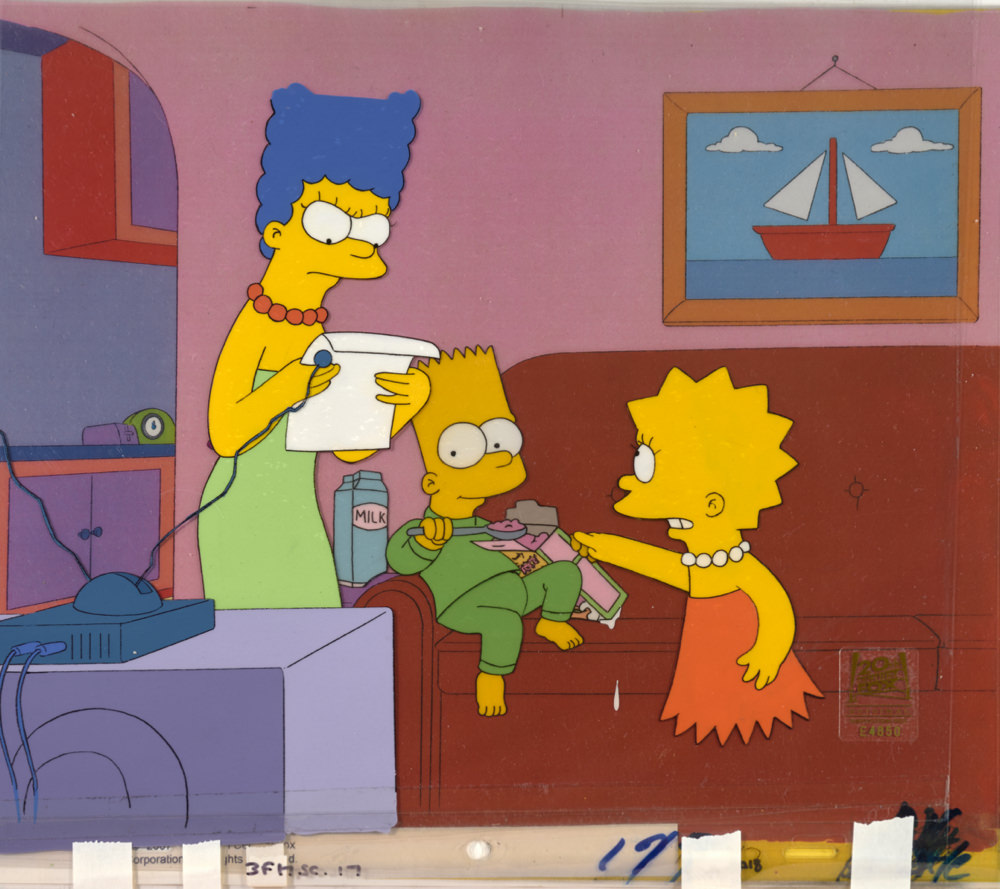

The Art of The Simpsons: A Springfield Celebration at the Hilbert Museum
Calling all Simpsons fans! For the first time ever, Homer, Marge, Bart, Lisa, and other beloved residents of Springfield are taking center stage in an exhibition dedicated to the art behind the iconic animated series.

"The Art of The Simpsons" is now on view at the Hilbert Museum of California Art at Champman University in Orange, California. Opened on November 18, 2026, as part of the museum's 10th anniversary celebration, the exhibition features original illustrations and production cels showcasing some of the most recognizable characters from the world of The Simpsons. Originally created by Matt Groening and brought to life by talented animators at Fox Television Animation, these artworks offer fans a special opportunity to explore the creative process behind one of television's most beloved animated series.The exhibition draws from the Hilbert Collection's extensive holdings of animation and movie art, which also include works associated with Disney, Pixar, Lucasfilm, Marvel, Hanna-Barbera, and Sesame Street.
Whether you've followed the advantures of the Simpson family for decades or simply love animation, this is a chance to experience Springfield from a whole new perspective!
Exhibition Details
- Location: Hilbert Museum of California Art, Champman University, Orange, California
- Gallery: North Gallery
- Opening Date: November 18, 2026
- Admission: Free
- Museum Hours: Wednesday-Sunday; closed Monday and Tuesday
Advanced online reservations are recommended due to expected demand.
For more information, please visit the Hilbert Museum website.